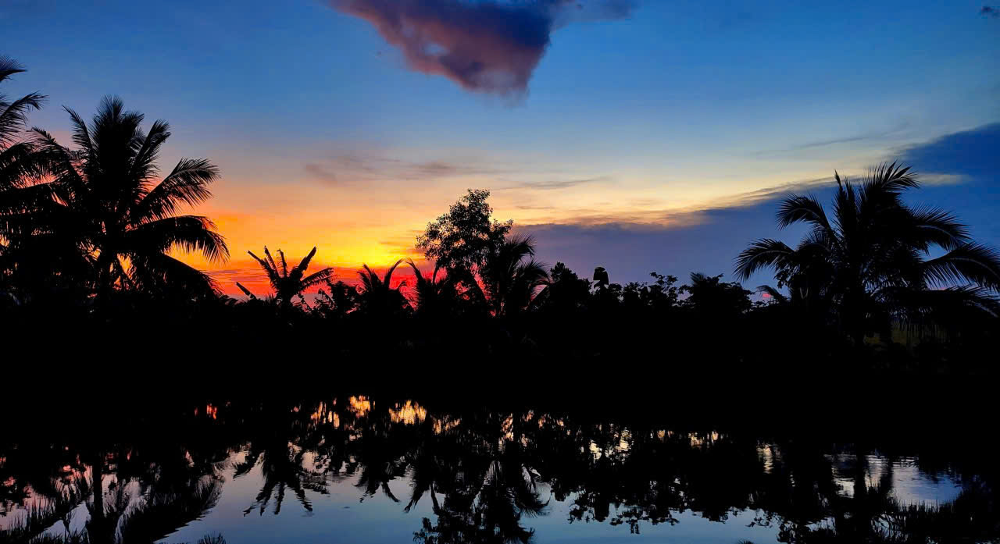
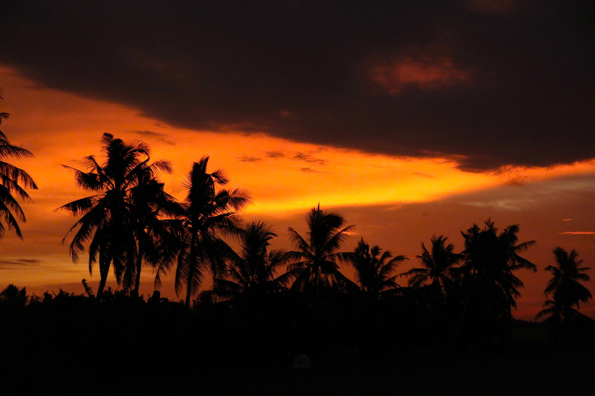
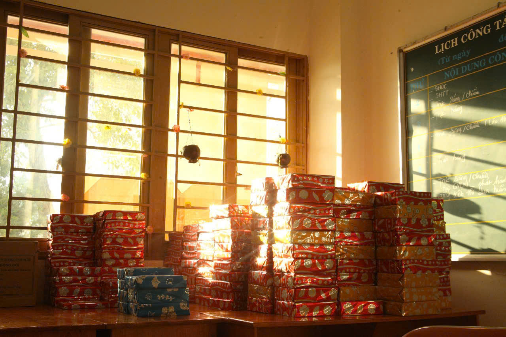
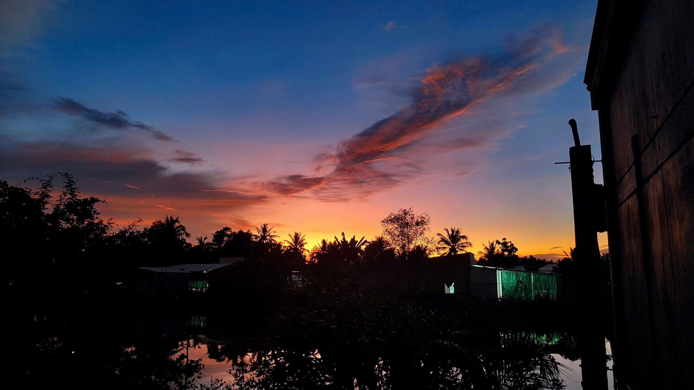
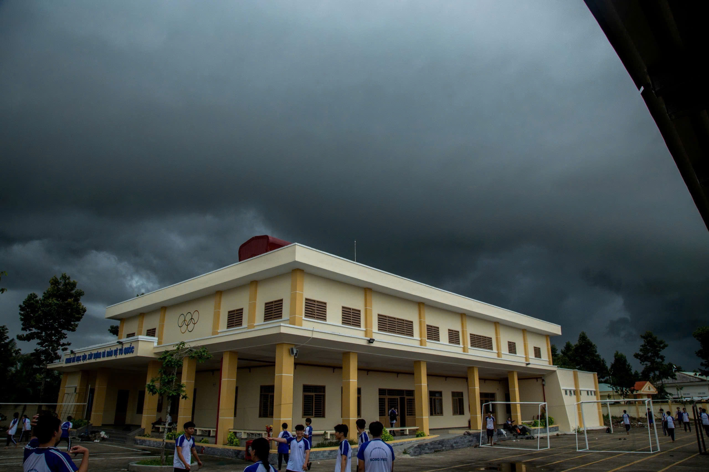
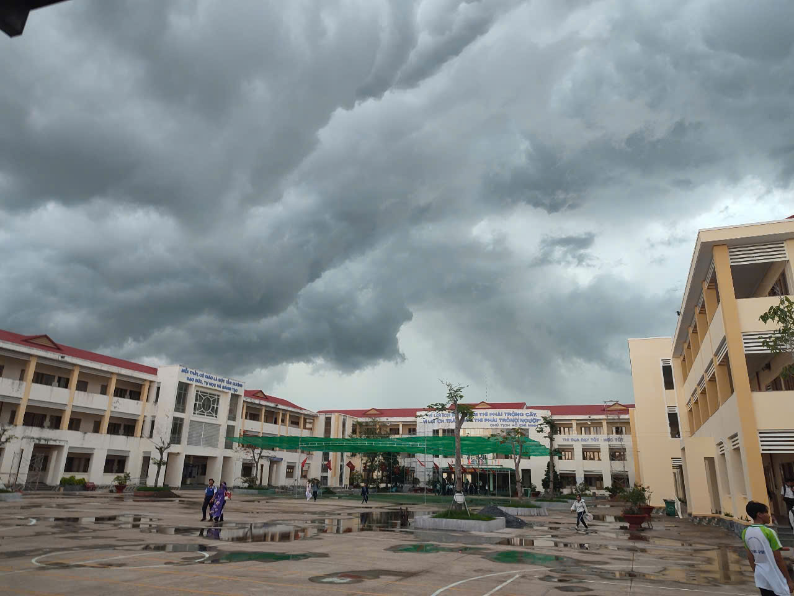
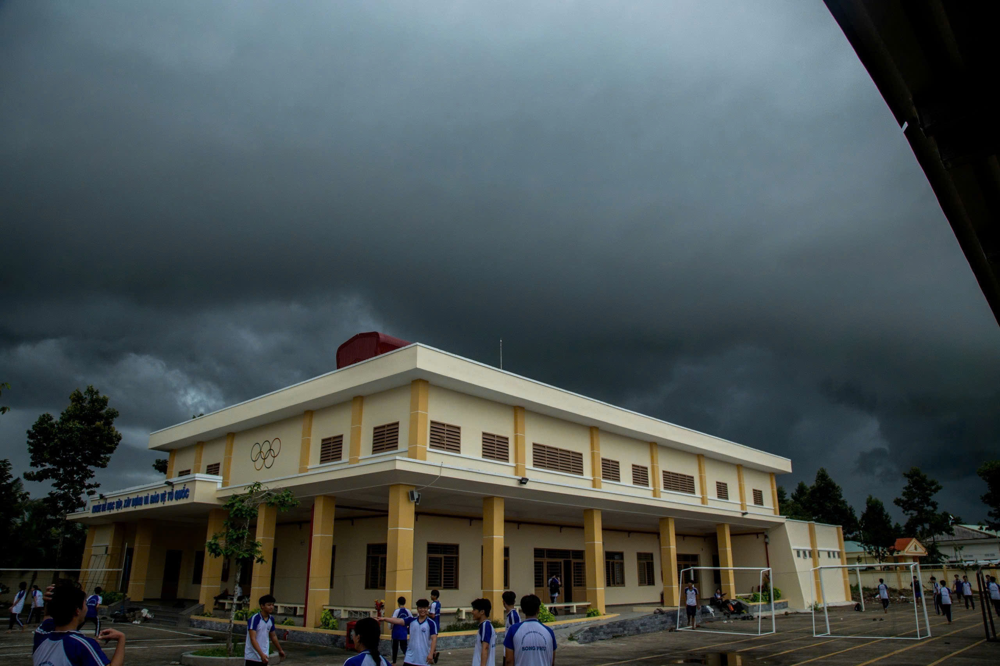
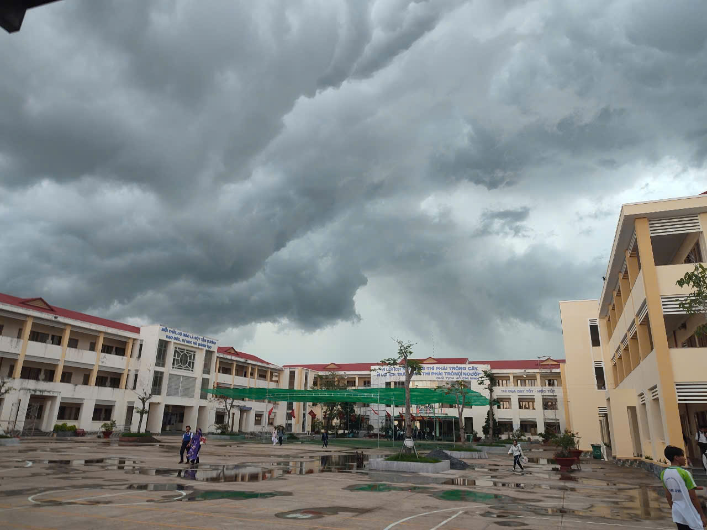

Bầu Trời Hoàng Hôn
Bầu trời hoàng hôn khoác lên mình sắc cam hồng dịu nhẹ, như một bức tranh được vẽ bằng ánh sáng cuối ngày. Những đám mây trôi lững lờ, phản chiếu ánh nắng đang dần tắt, tạo nên vẻ đẹp vừa rực rỡ vừa yên bình. Mặt trời chậm rãi khuất sau đường chân trời, để lại khoảng không gian tĩnh lặng đầy cảm xúc. Trong khoảnh khắc ấy, bầu trời như thì thầm một lời tạm biệt êm đềm của ngày dài.





 


